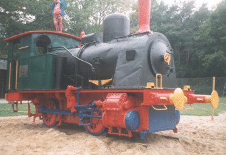
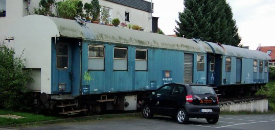
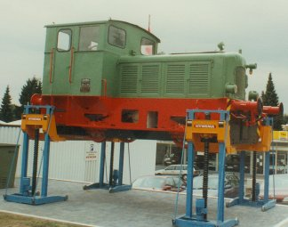
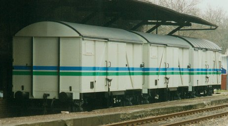
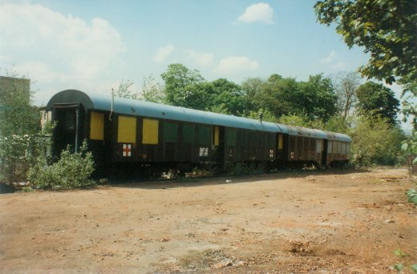
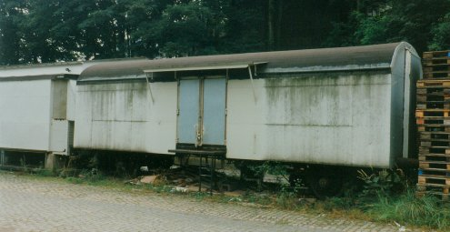

Krümelbahn
KrümelbahnErhaltene Fahrzeuge
Auch auf dem Solinger Stadtgebiet gibt es einige Bahnfahrzeuge, die erhalten sind und nun den verschiedensten Zwecken dienen.
Engelsberger Hof

| Hersteller | Linke-Hoffmann-Busch, Breslau |
| Fabrik-Nummer | 881 |
| Baujahr | 1912 |
| Bauart | Bn2t |
| Typ | Cyklop |
| Lüp | 7750mm |
| Radstand | 2200mm |
| Raddurchmesser | 970mm |
1912: Lieferung an die Werftbahn der Marine Wilhelmshaven
1947: Vorortbahn Wilhelmshaven Nr. 3
1951: WLH, Hattingen (Westfälische Lokomotiv-Farbrik Reuschling, Hattingen)
19..: Mannesmann Röhrenwerke (Kronprinz) Solingen
1971: als Kletterlok auf dem Spielplatz Engelsberger Hof aufgestellt.
Nachdem jahrzehntelang nahezu unfallfrei gespielt wurde, ist die "Kletterlok" inzwischen aus Sicherheitsgründen mit Schutzgittern "verunstaltet".

Schmalzgrube / Fuhr

| Fahrzeugnummer | 60 80 99 26 157-0 60 80 99-25 451-8 |
| Bauart | Wohn-Werkstattwagen480 Wohnwerkstattwagen480 (ex 3yg) |
| Lüp | 13300mm |
| Radstand | 7500mm |
| Gewicht | 18,6t |
Die Wagen waren zuletzt bei der Signalmeisterei Hannover eingestellt und kamen 19.. nach Solingen. Hier dienten Sie seitdem der benachbarten Gesenkschmiede als Lager und Aufenthaltsräume.
Am 10.August 2009 sind die Wagen an die Fuhr umgezogen, um nach der Renovierung als Treffpunkt und Stadtteil-Cafe zu dienen.
Das alles ist inzwischen Geschichte: am 19.September 2023 wurde damit begonnen, die Wagen vor Ort zu verschrotten.
ehemalige Fahrzeuge
Neben erhaltenen (und noch zugänglichen) Bahnfahrzeugen auf dem Solinger Stadtgebiet gibt es einige Fahrzeuge, die nicht mehr öffentlich zugänglich sind oder inzwischen verschrottet wurden (...bzw. der Verbleib bei diesen Fahrzeugen unbekannt ist...).
Hywema, Hebebühnen

| Hersteller | Jung-Jungenthal, Kirchen/Sieg |
| Fabrik-Nummer | 11897 |
| Baujahr | 1954 |
| Bauart | B-dm |
| Typ | VN234 |
| Lüp | 6450mm |
| Radstand | 2200mm |
| Gewicht | 20t |
| Leistung | 80PS |
Von dieser Lokgattung wurden zwischen 1940 und 1958 insgesamt 26 Maschinen gebaut.
1954: Auslieferung an Maschinenfabrik Buckau R. Wolf AG, Grevenbroich, spätere Krupp Maschinentechnik GmbH, Grevenbroich
1995~2011: Aufstellung als Werbelokomotive für die von der Firma Hywema gebauten Hebebühnen
2012: an Eugen Scalabrin Recycling GmbH Solingen, abgestellt [08.05.2018 noch vorhanden]
Bahnhof Solingen-Wald

| Bauart | G |
| ohne Fahrzeugnummern |
Die Fahrzeuge stehen ca. 250m weiter Richtung Gräfrath auf dem Gelände der Firma Rabbasol-Chemie.

| Fahrzeugnummer | 50 80 02 11 007-2 50 80 02 11 005-6 |
| Bauart | Lazarettzugwagen der RCT (Royal Corps of Transport) der 79.Railway Squadron der britischen Rheinarmee Mönchengladbach-Rheindahlen (Bygkr, ex 4yg) |
| Lüp | 19460mm |
Verbleib nach dem Bau der Korkenziehertrasse unbekannt.
Bahnhof Solingen-Nord

| Bauart | Gbs 252 |
| ohne Fahrzeugnummern |
Der gedeckte Güterwagen diente einem ortsansässigen Getränkehandler als Lager, links nebem dem Güterwagen steht ein russischer Breitspurgüterwagen ohne Fahrgestell.
Verbleib nach dem Bau der Korkenziehertrasse unbekannt.